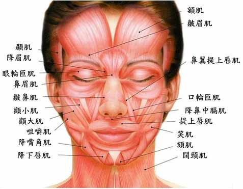
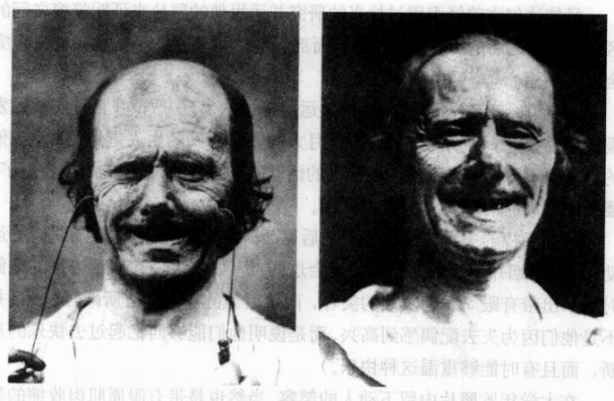
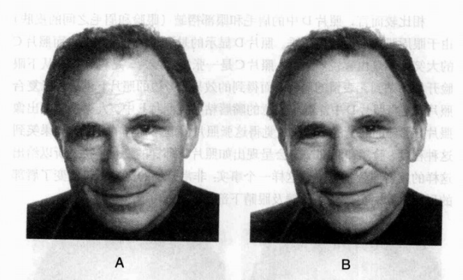
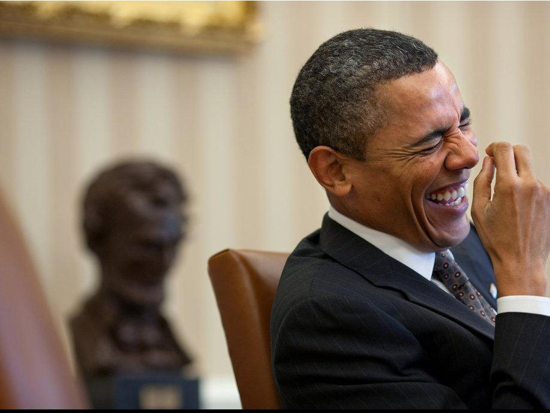

心理学中有一些被大众视为奇技淫巧的东西。催眠如是，解梦如是，微表情亦如是。我本科的时候喜欢看点这些东西，没想到这里用上了。
---
首先要强调：
不能只根据一个人的笑脸判断其真假，要与ta平静的面容（基线水平）对比才可以！*3 重要的事情说三遍！
---
保罗·艾克曼(Paul Ekman)是研究情绪和面部表情的先驱。在《情绪的解析》一书中，他详细介绍了不同的情绪所对应的面部表情，及其涉及的面部肌肉活动。
*面部肌肉示意图。留意颧大肌和眼轮匝肌的位置
艾克曼在书中描述了法国神经学家杜兴的实验。杜兴找到一位脸上感觉不到任何痛苦的人当被试，用电流刺激他的脸部肌肉，来研究每一块面部肌肉如何改变面部表情。他分别通过刺激被试的颧大肌和给被试讲笑话的方式，得到了两张笑容照片。
*杜兴得到的两张笑容照片，其中左边的照片为电流刺激的结果，而右边的照片是被试自然的笑容
乍一看似乎差不多，但可以感觉出，左边照片中被试并不是真的高兴。如果仔细观察，会发现右边的照片中，被试的下眼睑更加饱满，形成的阴影也更深，而这是由眼轮匝肌收缩引起的。艾克曼的结论是，真正的笑容是由颧大肌和眼轮匝肌共同完成的。其中颧大肌受意识控制，而后者只能被真正的笑意激活。
翻译成人话，就是：如果你发自内心在笑，嘴角会翘起来，苹果肌会隆起来，卧蚕会凸起，同时它下面会形成沟纹；而如果是假笑，卧蚕基本没有变化。
如图所示：
A图与B图的区别在于眼睛部分。他们拥有同样隆起的苹果肌，同样上翘的嘴角，但卧蚕的不同决定了哪张图片是假笑。B图中可以明显看到，卧蚕因眼轮匝肌收缩而凸了出来，形成一条沟纹（另一条沟纹是他的眼袋）。而A图中我们只能看到这位先生两个大大的眼袋，卧蚕却无影无踪。
当笑得特别狰狞的时候，即使是假笑也会挤出点卧蚕的，这时又应该从哪里判断呢？
答案是眼睛。发自内心的笑容中，眼轮匝肌和颧大肌的收缩程度是相匹配的。当一个人开怀大笑的时候，伴随着颧大肌的提升和眼匝轮肌的收缩，人的眼睛会接近闭合，瞳孔变小，鱼尾纹加深，就像这样：
如果眼睛的闭合程度与笑的程度不匹配，他应该就是在假笑了。
所以从学术的角度来讲，要看起来不像假笑，得从这几个方面着手：
所以好看的负责回答“笑得好看”，我负责回答“避免假笑”……
人生就是如此忧伤……唉
拓展阅读：